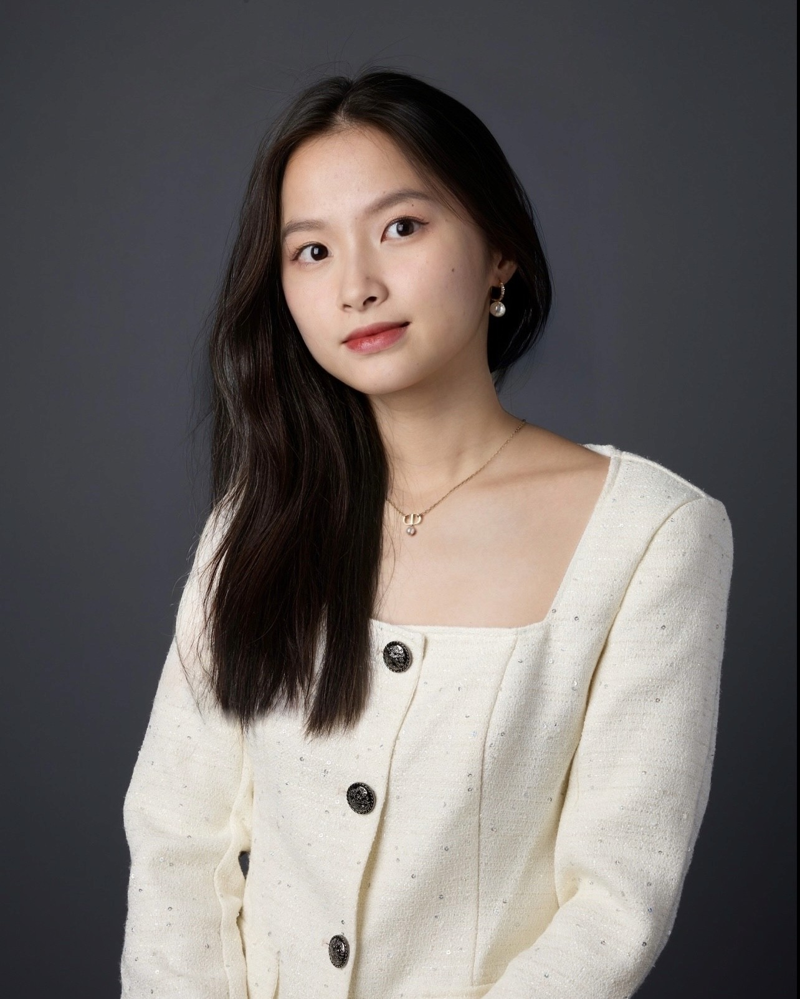

Pick a bird
A little introduction to each project, with the full story just a click away.
Read the full case studyhi, i’m cheryl. / yến trân
Designer, wanderer, and the person
who stops to photograph the sky.
somewhere between
where i am & what’s next.
I love exploring a new city without planning every minute. Finding a tiny café. Taking my camera somewhere random. Watching the clouds change.
Being above everything makes me feel calm and excited at the same time. I think I’m always looking for that feeling of wow, I get to experience this.
preferably from the window seat.No perfect itinerary.
Just a camera and a little curiosity.
Photographs from Cheryl’s existing portfolio. Click one to take a closer look.
Every project has a place here.
Drag to wander around.
Pick a bird. Discover a project.
Explore the full case studies:
Vanguard AI · Atlas · Urban Outfitters · Disney · Impactvesting · Microsoft Windows 365A little introduction to each project, with the full story just a click away.
Read the full case studyAI, accessibility, agriculture, content creators, privacy, healthcare, and deployment. Six experiments and the questions behind them.
OFF THE USUAL PATH / ARTWORK & VISUAL DESIGNMotion, illustration, branding, art direction, and the creative work that doesn’t fit neatly in a case study.

hi again. that’s me.
I’m dreamy, curious, sentimental, and usually a little in my own world. I love traveling, photography, being outside, and any excuse to be up in the air.
Skydiving. Paragliding. Flying. Or just a completely ordinary blue sky on the way somewhere.
Yến Trân & a little bird.
Birds have always felt personal to me. Freedom, movement, curiosity. Having somewhere to go without necessarily knowing exactly where that is.
That’s the feeling I want to keep here.